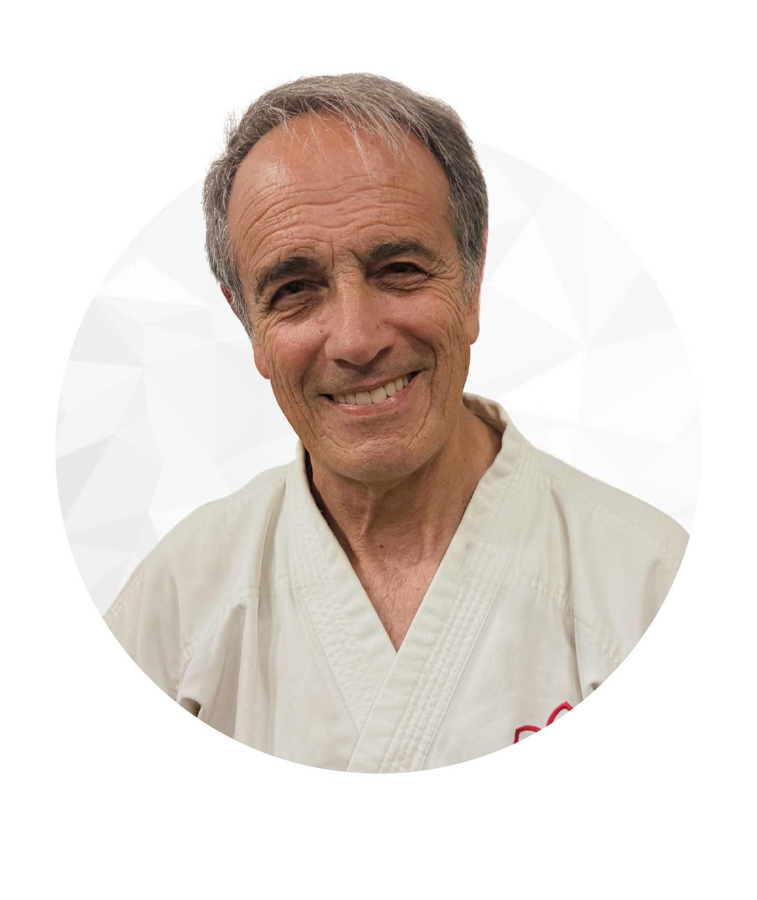
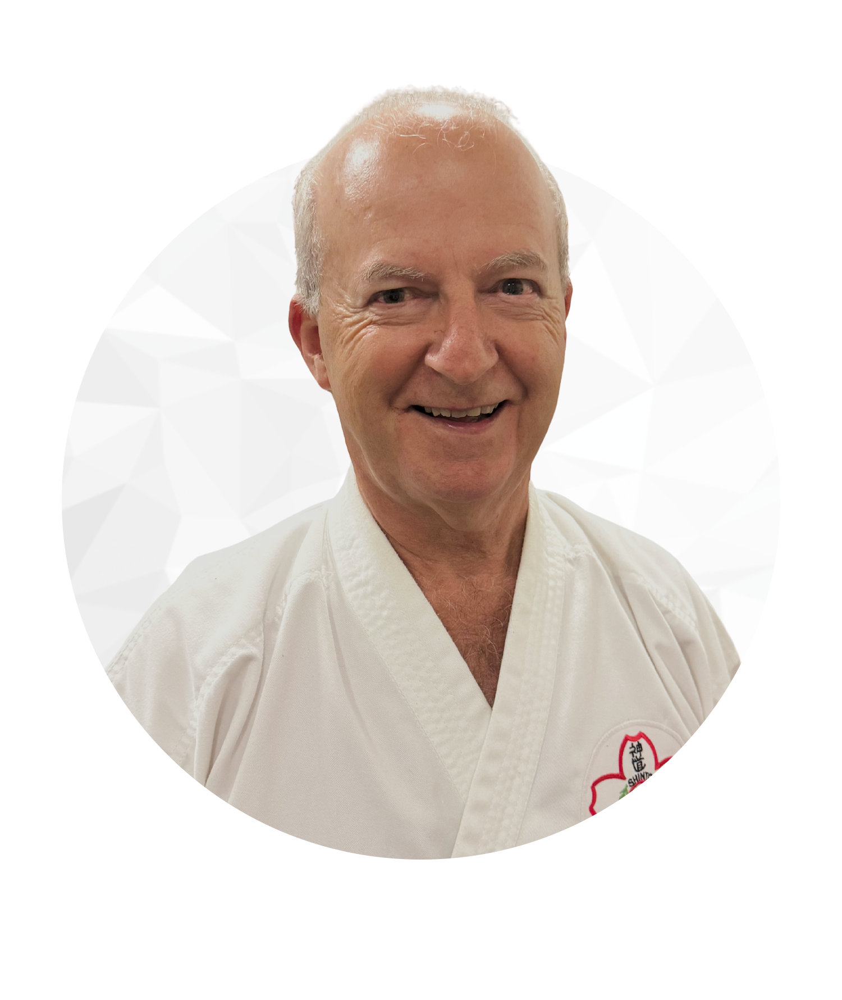
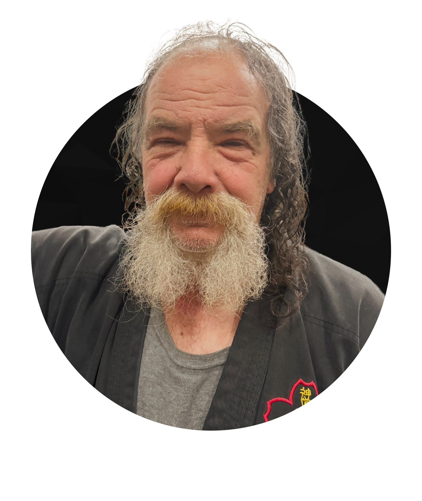
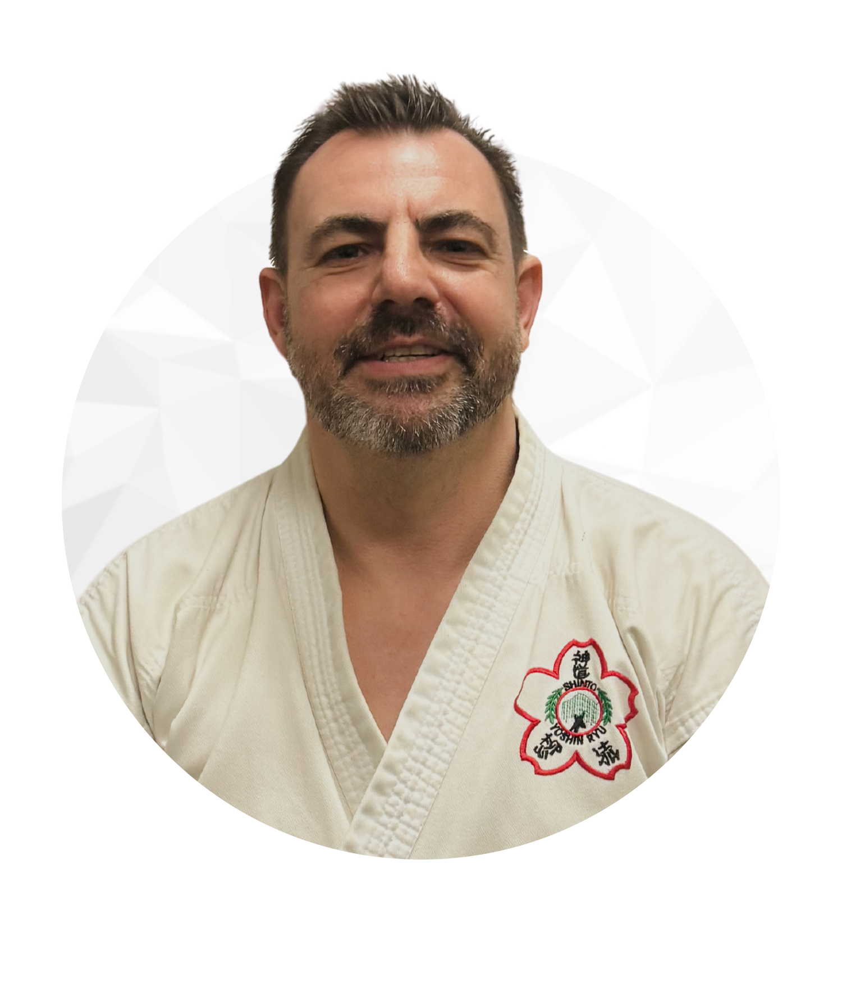

DOJO ETIQUETTE
- You must bow on entering the dojo, and before leaving
- You must bow before stepping onto the mat and before leaving it
- You must respect our Shihan, Sensei and Sempei
- Always refer to your instructors as Shihan, Sensei and Sempei
- You must respect yourself and other Karate players.
- Be on time for training
- You must gain permission from the instructors before leaving the training area
- You must be clean, neat and aware of your composure
- Unnecessary roughness, crude language or disrespect will not be tolerated
- Without the appropriate safety/protective equipment being worn, a student cannot participate in any randori/kumite/free sparring
- No watches or jewellery are permitted to be worn during training
- You must take up knowledge as a sponge takes up water, and be prepared to share this knowledge with others
- You must do nothing either by your actions or lack of actions to dishonour the spirit of Budo
HISTORY
The original club began as “Shinto Yoshin Ryu Jujitsu” in 1883 (approximately) by Sensei Yuki Yoshi
Tatsusaburo Nakayama, who designed an "Atemi" style which stressed striking and kicking.
On
June 1st 1921 Sensei Nakayama handed over the running of the school to Sensei Hironori Otsuka, (who
was later to founder Wado Kai style of Karate).
In 1940, when Jujitsu had lost its popular
appeal to other martial arts such as Judo, Aikido and the new Karate, the Budokan required all clubs
and styles of martial arts to register their style names, and Senseis.
It was at this time
that Sensei Otsuka decided to become "Wado Kai Karate", and so the Shinto Yoshin Ryu Jujitsu style
lapsed.
It was rekindled in Australia on the 2nd February 1960 with the registration of the
Willow Heart School of Judo at the RSL Hall, Station Street, Fairfield, Victoria.
John Watkin
Willow Heart Yoshin Ryu Karate was founded by Shihan John. L. Watkin
(22/07/1929 - 07/09/1993) on 2nd August 1952.
Shihan John during his life achieved the
following ranks in Martial arts:
| 7th DAN | Dai Sensei Willow Heart Yoshin Ryu Karate |
| 6th DAN | Karate Instructors Association of Australia |
| 5th DAN | Judo |
| 4th DAN | Jujitsu |
| 3rd DAN | The World TaeKwonDo Federation |
| 2nd DAN | Tae Kwon Do (Aust) |
| 1st DAN | Wado Kai Karate |
| 1st KYU | Aikido |
Yoshin Ryu Karate Australia
After training in the old style of Jiu Jitsu with further studies in Aikido and Judo, it was decided
to add the training in Goju Kai and Wado Kai to all this and recreate Yoshin Ryu as a new Karate
style.
Much thought was given to the physical shape, strength and mentality of the European,
in order to make the best of this Japanese/Australian style of Karate.
The style incorporates
close fighting techniques, along with throwing and sweeping movements.
It stresses control of
one's-self as well as an opponent, and tries to teach the Japanese customs and manners concerning
Budo – The Way of the Warrior.
Lineage
| 1960 - 1993 | Shihan John L. Watkin |
| 1993 - current | Shihan Guido Grima |
Present Dai-Sensei: Shihan Guido Grima
Commenced martial arts training Northcote, 1978.
| 7th DAN | Dai Sensei Willowheart Shinto Yoshin Ryu Karate |
AFFILIATIONS
World Kumite Organization (WKO)
OUR LEADERS
At Yoshin Ryu Karate, you will be taught by our team of Instructors, headed by Shihan Guido Grima. Our
instructors are chosen not only for their years of karate experience and teaching ability, but also for
their sensitivity and desire to help others. With many years of training and teaching experience, and
from a range of diverse backgrounds, they are pleased to assist all students in their study of Karate.
You will receive the finest karate instruction available anywhere. Being a renowned Global style
means you’ll belong to a legitimate, world-wide structured organization that has strict standards and a
syllabus
Shihan Guido - Head Instructor
Guido is a renowned Karate expert with a lifetime of dedication to the martial
art. Born with a passion for Karate, Guido began his training at a young age and quickly rose through
the ranks under the guidance of his revered Shihan, John Watkin. Over the years, Guido's dedication and
unwavering commitment to Karate have made him a true legend in the martial arts community.
Despite numerous offers and opportunities for promotion in honor of his beloved Shihan, Guido has chosen
to remain at his current rank. This decision reflects his deep respect for Shihan John Watkin's
teachings and his desire to uphold the traditions and principles of Karate. Guido's loyalty to his
Shihan and the Yoshin Ryu style itself is a testament to his unwavering character and strong sense of
honor.
Even in his 70’s, Guido remains incredibly fit and continues to practice and teach Karate
with the same passion and intensity he had in his youth. He serves as an inspiration to both his
students and fellow practitioners, demonstrating that age is no barrier to maintaining peak physical
condition and martial arts excellence. Guido's legacy in the world of Karate is not only marked by his
impressive skills but also by his unwavering dedication to preserving the traditions and values of the
martial art he holds dear.
Sensei Michael
Sensei Michael is a true pillar of our Dojo, a living embodiment of dedication,
and a source of inspiration for all who have had the privilege of training under his guidance. His
journey in the world of various martial arts is a testament to his unwavering commitment and his
relentless pursuit of excellence.
Renowned for his meticulous attention to fundamentals and an
unyielding pursuit of perfection in the syllabus, Sensei Michael has not only honed his own skills to a
level of true mastery but has also instilled these values in each of his students. He tirelessly imparts
his wisdom, emphasizing the importance of discipline, respect, and precision in every aspect of martial
arts.
Sensei Michael's expertise in both Judo and Aikido is nothing short of remarkable. His
technical prowess, honed over decades of practice and study, is awe-inspiring. He seamlessly integrates
the two disciplines into his karate teachings, offering a holistic perspective on martial arts that goes
beyond physical techniques to encompass the philosophical and spiritual aspects of Martial arts.
Sensei Michael's leadership and mentorship have left an indelible mark on our Dojo's community. He is a
compassionate and patient teacher, always willing to lend a helping hand or offer guidance to those who
seek it. His ability to connect with our students on a personal level and nurture their growth, not only
as martial artists but as individuals, sets him apart.
Sensei Michael's journey in martial arts
is a testament to his lifelong commitment to the art and his unwavering pursuit of perfection. His
dedication, expertise, and the values he imparts have not only shaped our Dojo but have touched the
lives of countless individuals who have had the privilege of training under him. Sensei Michael is not
just a martial arts instructor; he is a true Sensei, a source of inspiration, and a cherished mentor to
us all.
Sensei Domenic
Sensei Domenic is the beating heart of our Dojo, a guardian angel of Yoshin Ryu
Karate, and a true source of inspiration for all who have had the honor of knowing him. His presence in
our martial arts community is marked by his exceptional skill in close-contact fighting and his
unwavering commitment to empowering, protecting and training (in particular) our girls at the Dojo.
Renowned for his mastery of close-contact techniques, Sensei Domenic is a force to be reckoned with.
His expertise in this area is not just a testament to his physical prowess but also a reflection of his
dedication to honing his skills to perfection. He instills in his students the importance of
self-defense, ensuring that they are well-equipped to protect themselves in any situation.
Sensei Domenic's dedication goes beyond the physical aspect of martial arts. He has emerged as a
guardian figure for the girls at our Dojo, providing them with not only the skills needed to defend
themselves but also the confidence to navigate the challenges they may encounter outside the Dojo's
walls. His commitment to ensuring their safety and well-being is unwavering, and his support is a beacon
of strength for all.
His impact on the lives of our students extends far beyond the mats. Sensei
Domenic's teachings emphasize not just physical strength but also mental fortitude and emotional
resilience. He encourages our young warriors to be empowered, to stand tall, and to face adversity with
unwavering resolve.
Senpai Victor
Senpai Victor is a treasured gem in our Karate Dojo, a dedicated warrior who
embodies the true spirit of Yoshin Ryu and inspires us all. His journey in the world of martial arts is
a testament to his unwavering commitment, profound understanding of fundamentals, and exceptional
mastery of both Karate and Jujitsu, with a particular finesse in the art of grappling.
Renowned
for his unyielding focus on fundamentals, Senpai Victor sets the gold standard in our Dojo. He
understands that a strong foundation is the key to excellence, and he tirelessly imparts this wisdom to
his fellow students. With patience and diligence, he guides us through the basics, instilling in us the
values of discipline, precision, and the unwavering pursuit of perfection.
Yet, what truly
distinguishes Senpai Victor is his expertise in Jujitsu, where his skill in grappling is nothing short
of astonishing. His techniques are a mesmerizing display of strategy, strength, and agility. In the heat
of training sessions, Senpai Victor's active participation pushes us all to strive for greater heights
and refine our own abilities.
Beyond his technical prowess, Senpai Victor is a mentor and friend
to all in our Dojo. Approachable and humble, he readily shares his knowledge and experience, fostering a
sense of unity and camaraderie among his fellow students. His presence enhances our Dojo's sense of
community, creating an environment where we all flourish.
Senpai Dom
Senpai Dom is the backbone of our Karate Dojo, a shining example of dedication,
and an unwavering source of support for his superiors, Guido, Michael, and Domenic. His high attendance
and genuine commitment have made him an integral part of our Dojo family.
Renowned for his
consistent and high attendance, Senpai Dom embodies the essence of dedication. His presence is a
testament to his unwavering commitment to the art of Karate and his relentless pursuit of
self-improvement. Rain or shine, he shows up, setting an example for all of us.
What truly sets
Senpai Dom apart is his support for his superiors, Guido, Michael, and Domenic. He understands the
importance of respect and camaraderie. Always ready to lend a helping hand, offer words of
encouragement, or provide guidance, Senpai Dom creates an atmosphere of unity and positivity within our
Dojo.
Senpai Dom's commitment to the growth and success of his superiors goes beyond the training
mats. He is not only a dedicated student but also a loyal friend and mentor. His unwavering support has
had a profound impact on Guido, Michael, and Domenic, making their journey in Karate all the more
rewarding.